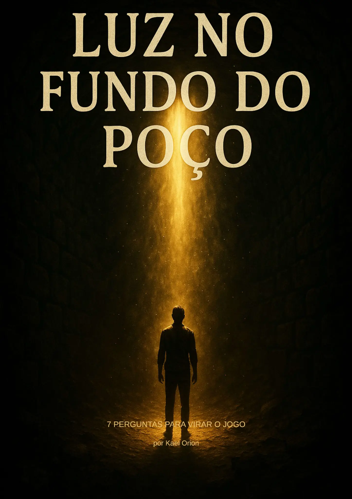

Você já sentiu que está preso em um ciclo sem saída? Que existe um potencial dentro de você que não consegue acessar? Este não é apenas mais um ebook de autoajuda. É um método comprovado, nascido da experiência real de quem já esteve onde você está agora.
 QUERO VIRAR O JOGO AGORA →Está sem dinheiro, com contas vencendo e sem perspectiva de melhora?
Acorda todos os dias se sentindo desmotivado e vivendo no automático?
Sabe que tem potencial para muito mais, mas algo sempre te sabota?
Já tentou várias soluções, mas continua preso nos mesmos padrões?
Sente que sua vida está passando enquanto você apenas observa?
Se você respondeu sim para qualquer uma dessas perguntas, saiba que não está sozinho. E mais importante: existe uma saída.
Este guia nasceu em um momento real — sem filtros. Quando eu, Kael Orion, estava sem dinheiro, com o aluguel vencido, desmotivado e vivendo no automático. Foi quando parei e escrevi estas 7 perguntas transformadoras.
Não são perguntas comuns. São gatilhos poderosos que te forçam a encarar verdades que você talvez esteja evitando — e é exatamente por isso que funcionam.
Este ebook não é sobre teoria. É sobre ação. Cada pergunta vem com espaço para você escrever suas respostas, transformando insights em compromissos reais com você mesmo.
"Encarei cada pergunta como se minha vida dependesse disso. E, de certa forma, dependia." — Kael Orion
Identifique o que você está fingindo não saber sobre sua situação atual
Descubra o que em você ainda sabota seu próprio potencial
Entenda qual medo te mantém preso e o que ele tenta te proteger de sentir
Visualize como seria viver hoje com total autenticidade
Defina o que faria se tivesse coragem total por 24 horas
Conecte-se com a versão de você que já venceu essa batalha
Identifique o que precisa deixar para trás HOJE para se tornar quem nasceu para ser
A verdade liberta, mas primeiro dói. Este ebook é para quem está pronto para essa dor transformadora.
Encontre um espaço tranquilo, sem distrações
Não há espaço para autoengano neste processo
O ato de escrever materializa suas intenções
Conhecimento sem ação é apenas entretenimento
"Estava desempregado há 8 meses quando encontrei este ebook. A pergunta 3 me fez perceber que meu medo de rejeição estava me impedindo de buscar oportunidades. Uma semana depois de fazer os exercícios, consegui três entrevistas e uma oferta de emprego."
"Eu me sentia completamente perdida, como se estivesse apenas existindo, não vivendo. A pergunta sobre autenticidade me atingiu como um raio. Percebi quanto estava me traindo diariamente. Dois meses depois, mudei de cidade e comecei a viver do que realmente amo."
"Achei que seria mais um ebook genérico, mas as perguntas são perturbadoramente precisas. A número 7 sobre sacrifício me fez tomar uma decisão que estava adiando há anos. Doloroso? Sim. Transformador? Absolutamente."
R: Este método funciona para quem está disposto a ser brutalmente honesto consigo mesmo e agir com base nos insights obtidos. Não é mágica, é um processo de autoconhecimento e ação.
R: Muitas pessoas relatam insights imediatos ao responder as perguntas. Mas a verdadeira transformação acontece quando você começa a agir com base nesses insights, o que pode ser no mesmo dia.
R: A maioria dos métodos foca em técnicas externas. Este ebook trabalha com perguntas que atingem o núcleo dos padrões limitantes, forçando você a confrontar verdades que talvez esteja evitando há anos.
R: Não. O método é direto e acessível para qualquer pessoa que saiba ler e esteja disposta a refletir honestamente.
Cada dia que passa é mais um dia vivendo abaixo do seu potencial. A transformação está a apenas uma decisão de distância.
QUERO ACESSAR O EBOOK AGORA →